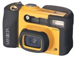

| Minolta Vectis Weathermatic APS Camera
During our trip to the Maldives, we used underwater disposable cameras to take photos of fishes. These came out reasonably well, but weren't of wonderful quality. So, we decided to invest in a proper underwater camera. We'd also been carrying a small panoramic camera around with us, which again didn't produce all that good quality images. So, an APS camera appeared to be the ideal solution. Ironically, we haven't had the opportunity to take it snorkelling since. We bought the Weathermatic camera at Heathrow Airport as we left the UK for a long weekend in Iceland. It was the only waterproof APS camera we could find at the time. Although for the trip to Iceland we didn't need a waterproof camera, one that was weatherproof and didn't object to being dropped in the snow was a good idea. The photos it produces are of a pretty high standard, and we've had no problems with it in the 2 years we've had the camera. The specification claims that it can go underwater to a depth of around 10 metres (we've taken it down in swimming pools, and lakes and things to 3 or so metres and it has been okay). The controls are designed to be easy to use underwater, and this also makes them quite easy to use with gloved hands. Of course, this makes the camera quite bulky (and also, being bright yellow it isn't subtle). We're in no rush to replace this camera, and it is used as our main camera for all events. |
 Related Links:
|
|
Back to index page |